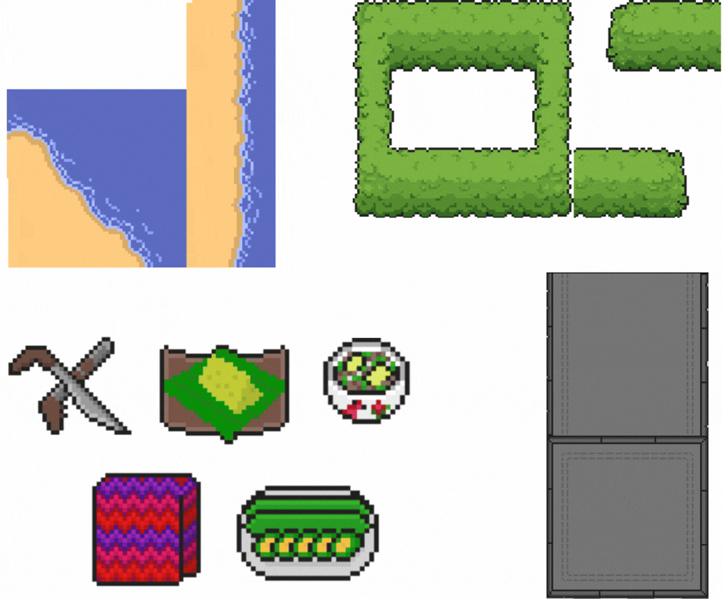
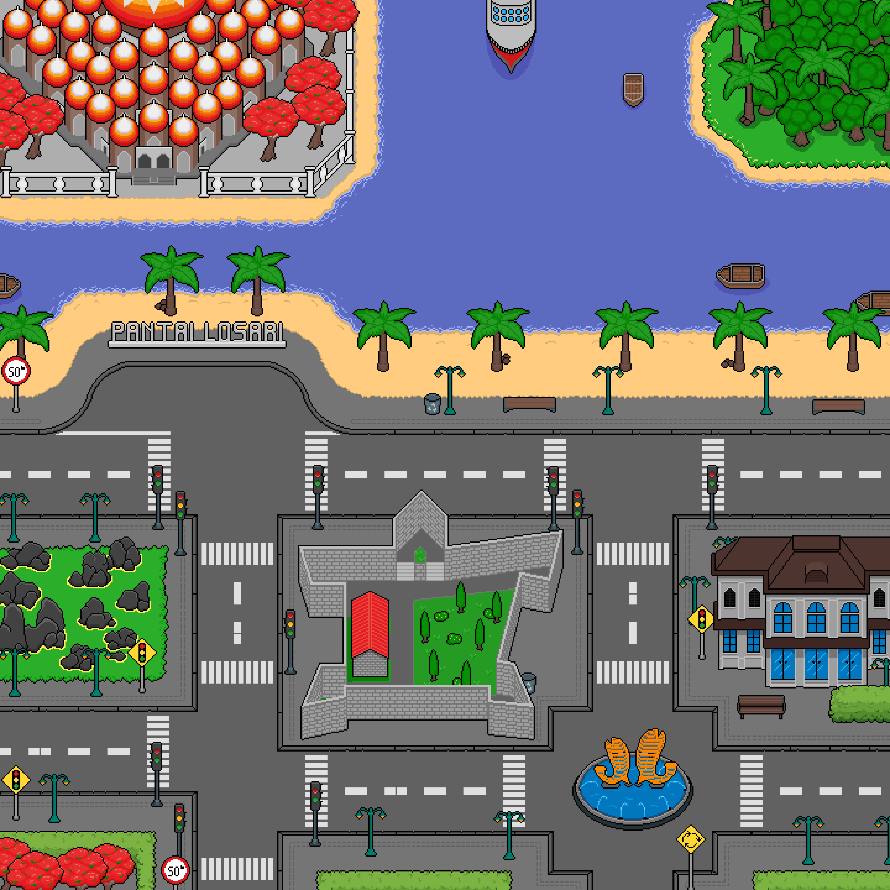
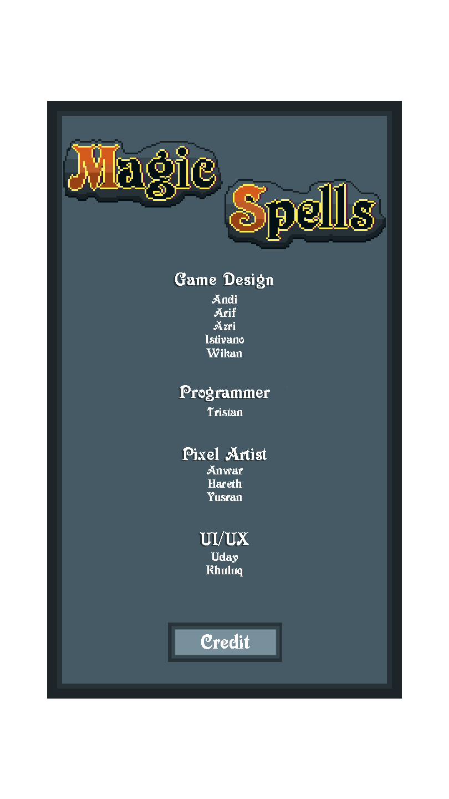
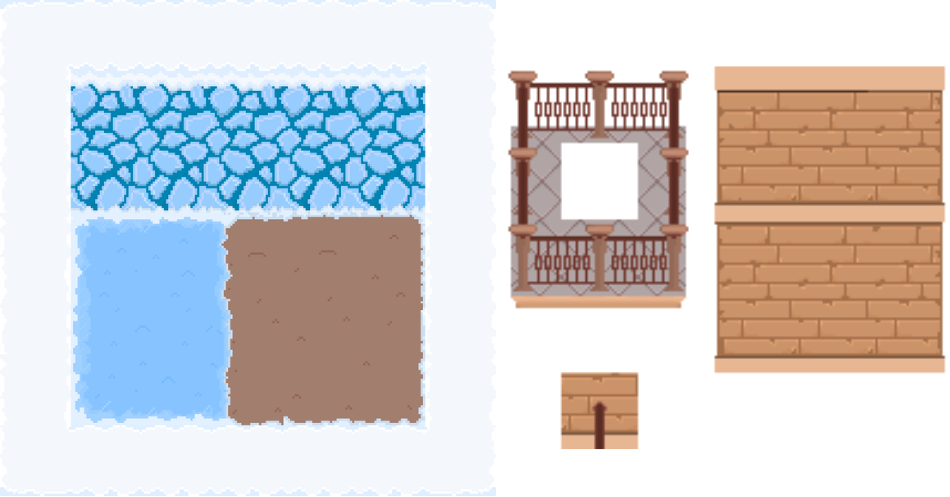
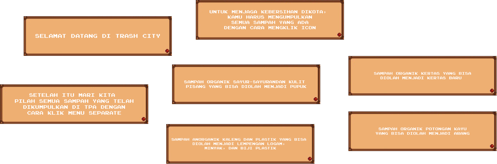

Semua
Karya
Koleksi lengkap perjalanan kreatif, eksperimen, dan proyek profesional yang pernah saya bangun.
AR Soccer Strategy: Real-Time Virtual Set Studio


Proyek ini menghadirkan ekosistem Virtual Set Studio berbasis Augmented Reality (AR) untuk siaran analisis taktik sepak bola. Sistem mengotomatisasi pemrosesan data formasi secara real-time dari API Livescore (JSON) menjadi objek visual 3D interaktif di atas marker fisik. Dilengkapi aplikasi remote Android nirkabel berbasis Netcode for GameObjects (NGO) & Unity Relay, presenter dapat mengendalikan pergerakan posisi pemain secara responsif melalui fitur drag & drop.
Environment Artist : Playland Hidden Gems



Membuat deisign dan map pada proyek game Playland Hidden Gems di lokasi makassar. Durasi pengerjaan: 3 Bulan.
UI/UX : Magic Spell



Membuat UI/UX dan Logo pada game Magic Speel. Durasi pengerjaan: 1 Bulan.
Environment Artist : Road Of Spices
.png)
.png)
.png)
Riset implementasi pembuatan environment untuk pembuatan proyek game Road Of Spices. Durasi pengerjaan: 4 Bulan.
Environment Bothwill: Flip the Night
.png)
.png)

Riset dan implementasi pembuatan environment untuk pembuatan proyek game Bothwill: Flip the Night. Durasi pengerjaan: 2 Bulan.
UI/UX Main Menu dan Assets Game “Trash City”
.png)
.png)

Riset dan implementasi pembuatan UI/UX dan assets pada proyek game Trash City. Durasi pengerjaan: 3 Bulan.